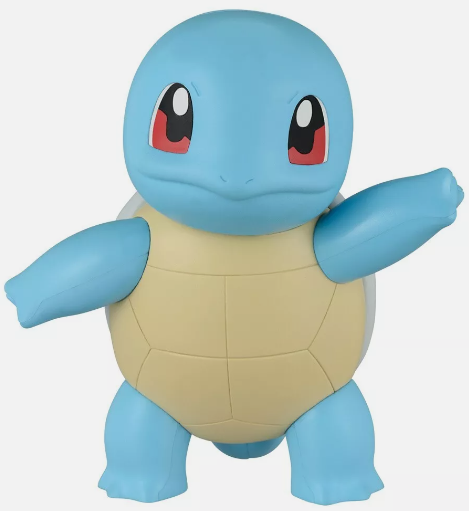
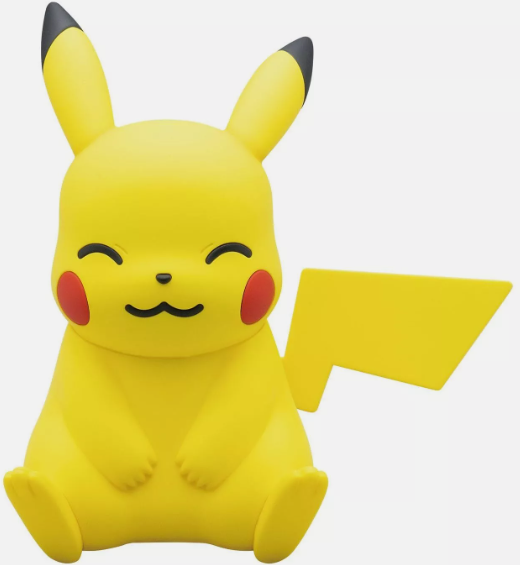
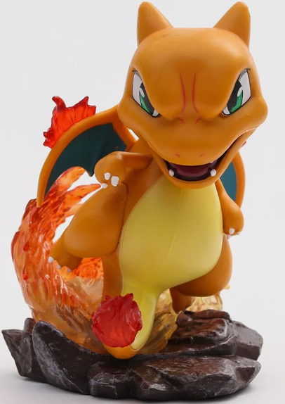
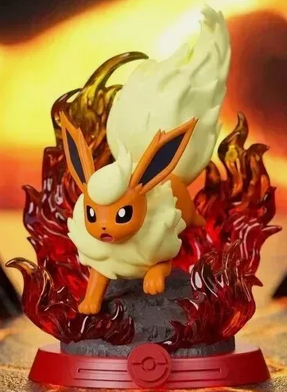
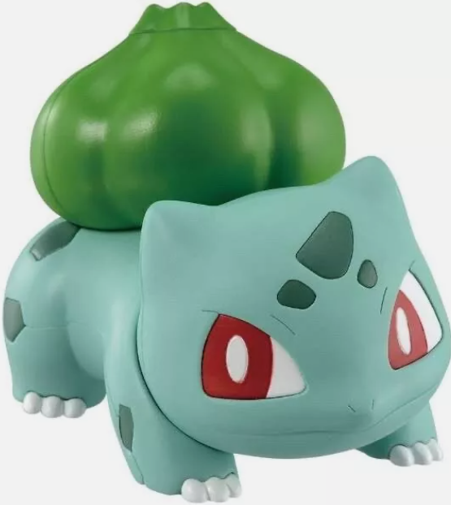
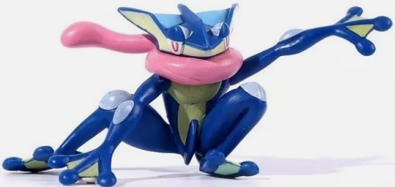
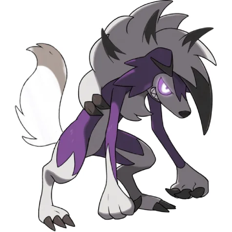

𝐒𝐪𝐮𝐢𝐫𝐭𝐥𝐞
Escupe chorros de agua mientras flota para capturar a sus presas.
Se esconde en su caparazón cuando se siente en peligro. Cuando retrae
su largo cuello en el caparazón, dispara agua a una presión increíble.
Cuando se siente en peligro, se esconde en su caparazón y escupe chorros de agua por la boca.

𝐏𝐢𝐤𝐚𝐜𝐡𝐮
Es el más popular de los Pokémon. Parece un pequeño ratón cubierto con un abrigo amarillo.
Tiene orejas largas con puntas negras, mejillas redondas de un rojo brillante y una cola
grande en forma de rayo. Otra característica distintiva: tiene dos rayas marrones horizontales
en su parte posterior.

𝐂𝐡𝐚𝐫𝐢𝐳𝐚𝐫𝐝
A pesar de su parentesco a un dragón, Charizard es explícitamente un pokémon tipo fuego/volador, sin
embargo, este puede aprender diversos ataques de tipo Dragón.Charizard tiene dos alas que son azules,
mientras que la parte posterior es de color rojo, al igual que la mayor parte de su cuerpo.

𝐅𝐥𝐚𝐫𝐞𝐨𝐧
Una llama dentro de su cuerpo, enciende el aire que inhala y lo expulsa como fuego. HA: Flareon, el Pokémon
flama. Flareon es la forma evolucionada de Eevee, el aire que emana es encendido por una flama dentro de su
cuerpo y la expulsa como fuego.

𝐁𝐮𝐥𝐛𝐚𝐬𝐚𝐮𝐫
Pokémon cuadrúpedo de color verde y manchas más oscuras de formas geométricas. Su cabeza representa
cerca de un tercio de su cuerpo.

𝐆𝐫𝐞𝐧𝐢𝐧𝐣𝐚
es un Pokémon de tipo Agua/Siniestro introducido en la Sexta generación. Es de color Azul, pesa 40,0kg
y mide 1,5m. Es la forma evolucionada de frogadier. Su principal característica son sus 122 puntos de
Velocidad.

𝐂𝐞𝐧𝐢𝐜𝐢𝐞𝐧𝐭𝐚 𝐌𝐨𝐧𝐜𝐨𝐥𝐥𝐞
Es de temperamento irascible, pero da lo mejor de sí mismo en combate cuando cuenta con un Entrenador en el
que confía. La energía del fenómeno Gigamax ha hecho que su balón de fuego llegue a superar los 100 m de diámetro.

𝐋𝐲𝐜𝐚𝐧𝐫𝐨𝐜
Un Pokémon tranquilo y con nervios de acero. Se acerca rápidamente a sus presas y las hace trizas con su melena
de piedra. Ataca a sus presas con sus afilados colmillos y garras. Solo obedece las órdenes de aquellos
Entrenadores que logran ganarse su confianza.

𝐋𝐮𝐜𝐚𝐫𝐢𝐨 𝐋𝐮𝐠𝐢𝐚
Es capaz de emitir ondas que le permiten percibir la presencia y los sentimientos de un individuo incluso a
1 km. Dicen que, como es capaz de detectar auras, puede percibir a sus rivales aunque no los vea.
La explosiva energía de la megaevolución ha despertado su instinto

Volver